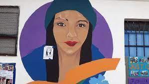

Violeta Dikenstein, Pastora Echagüe y Guadalupe González Campaña
El capítulo se propone pensar a la violencia de género como una categoría de denuncia emergente, cotidiana, eficaz y a la mano para identificar o nombrar situaciones problemáticas a nivel local. El objetivo principal es recuperar las percepciones que tienen distintos actores –funcionarios, policías y vecinos– en torno al “incremento” o simplemente a la presencia del problema, sobre todo en contexto de pandemia.
El trabajo se nutre de los postulados de la sociología de los problemas públicos. Esta perspectiva asume que las sociedades contemporáneas están atravesadas por múltiples problemáticas. No obstante, no todas ellas logran adquirir el estatus de problema público. Tampoco es suficiente con que un problema exista “objetivamente”. Las condiciones objetivas no son inherentemente problemáticas: los problemas sociales son definiciones colectivas (Blumer, 1971). Para que una condición determinada sea tildada de problemática para un gran número de personas, hace falta un proceso de creación de significado que la señale como tal. De este modo, además de la existencia del problema, hace falta un proceso social de construcción colectiva que permita que dicha condición problemática sea percibida de ese modo.
En ese sentido, los problemas de esta naturaleza guardan determinadas características. Ciertamente, la configuración de un problema público responde a una suma de procesos que involucra la formulación de demandas y demandantes ante una situación que se considera negativa y que amerita ser resuelta; la elaboración de explicaciones causales sobre el problema dotadas de verosimilitud y una preocupación de carácter extendido en la población que permanece estable en el tiempo (Pereyra, 2009; 2017).
Ahora bien, ¿qué implica definir una condición como problema público? En principio, un problema implica una definición moral: indica algo que está mal, que provoca un daño. A su vez, para que algo adquiera ese estatus es necesario que sea de carácter extendido, esto es, que afecte a un número significativo de personas. Un problema público requiere, también, de una dosis de optimismo, es decir, puede ser modificado y reparado por medio de la acción humana. Finalmente, refieren a situaciones que consideramos que deben ser cambiadas: algo debe hacerse al respecto (Loseke, 2007).
Desde esta perspectiva, los nombres, las categorías, el lenguaje, en suma, el modo en que los problemas son narrados por los actores sociales es de gran relevancia y será un eje de nuestro análisis. Para reconocer una situación y juzgarla como inquietante, es necesario un sistema de categorías que identifique determinadas situaciones como problemáticas en desmedro de otras (Guerrero et al., 2018; Loseke, 2007). En ese sentido, son muchas las implicancias al considerar el carácter narrativo de los problemas. En su elaboración se trazan nexos causales, se señalan culpables, víctimas y responsables. En efecto, mediante operaciones de tipificación, se construyen tipos sociales de personas. De manera que las narrativas sobre los problemas están cargadas de significado y nos llevan a mirar nuestro entorno de una determinada forma. Habilitan, en suma, un modo determinado (y no otros) de aprehender la realidad circundante. Ciertamente, la configuración de un problema público da cuenta de la aparición de un mundo en común, pues las demandas exitosas generan representaciones colectivas, determinados marcos devienen en saber popular, cuerpo de conocimiento creíble y aceptable (Gusfield, 2014). Estas categorías son morales, señalan un daño, algo que está mal y no debería ocurrir. En definitiva, las categorías públicas pueden funcionar como un mapa cognitivo: convierten al mundo en un lugar dotado de cierto orden, moralmente comprensible.
En la Argentina contemporánea, resulta ineludible el lugar que fue ganando la agenda de género a nivel público. La larga trayectoria de lucha del movimiento feminista, sumado a una serie de eventos y transformaciones a nivel institucional y social, dan cuenta de que la problemática ha ganado estatus de problema púbico. Como afirma Morgade se trata de una “época de fuerte visibilización de la lucha histórica de los feminismos y los movimientos de la disidencia sexual” (2021: 14). En este contexto de mayor visibilidad pública de la problemática de género, fue cobrando un lugar destacado la violencia hacia las mujeres. Tal como sostiene Trebisacce Marchand (2020), si bien las luchas y disputas del movimiento feminista son de larga data, en nuestro país fue recién en la década del ochenta que apareció en la agenda el término violencia para dar cuenta de la experiencia de padecimientos de las mujeres (cis). En este contexto, “las organizaciones sociales y políticas de mujeres cobraron mayor fuerza y la violencia de género ganó lugar en la agenda pública. Producto de ello, se fueron sancionando leyes y creando agencias estatales para la prevención de la violencia, principalmente en el ámbito familiar” (Cabral y Acacio, 2016: 175). En ese sentido, en 2009 se sanciona la ley 26.485 de protección integral para prevenir, sancionar y erradicar la violencia contra las mujeres. Allí se establece que la violencia contra las mujeres constituye toda conducta, acción u omisión, que de manera directa o indirecta, tanto en el ámbito público como en el privado, basada en una relación desigual de poder, afecte su vida, libertad, dignidad, integridad física, psicológica, sexual, económica o patrimonial, como así también su seguridad personal. Quedan comprendidas las perpetradas desde el Estado o por sus agentes. Asimismo, se considera violencia indirecta, a los efectos de la presente ley, toda conducta, acción omisión, disposición, criterio o práctica discriminatoria que ponga a la mujer en desventaja con respecto al varón. De esta manera, siguiendo a Velázquez (2006) la definición de la violencia contra las mujeres no refiere exclusivamente a la agresión física, sino que incluye la violencia psicológica o “por omisión” y se incluyen dentro de los posibles perpetradores al propio Estado.
Como mencionábamos, varios indicios dan cuenta de que violencia de género trepó a la agenda nacional hasta devenir en problema público. Sin ánimos de ser exhaustivos, es posible destacar algunos eventos que evidencian este proceso. Entre ellos, la incorporación de los femicidios dentro del Código Penal, el movimiento “Ni una Menos” que logró una amplia adhesión y visibilidad a nivel nacional, entre los medios masivos de comunicación y dentro del arco político. Esto redundó en una serie de transformaciones dentro del Estado, tales como la creación de la Unidad de Registro, Sistematización y Seguimiento de Femicidios, para la producción de estadísticas oficiales sobre estos crímenes, la sanción de la Ley Micaela (2018), la puesta en marcha de la Unidad Fiscal Especializada de Violencia contra las Mujeres (UFEM) (Cabral y Acacio, 2016). Asimismo, en diciembre de 2019 se creó el Ministerio de las Mujeres, Género y Diversidad.
En este capítulo nos vamos a detener en el trabajo interpretativo de los actores a la hora de pensar la problemática: cómo la perciben, nombran, caracterizan. A diferencia del enfoque “clásico” de los problemas públicos, nuestra mirada no se focaliza en la narrativa o esfera pública de construcción del problema1, sino en los usos, modos de ver, sentir, pensar y nombrar a la problemática por actores no necesariamente involucrados en la construcción de su narrativa pública, sino que se trata de personas que padecen o ven padecer a otros la violencia, o bien, funcionarios y fuerzas de seguridad que deben asumir la gestión e intervenir en casos de este tipo. Desde una mirada “desde abajo”, nuestro interés radica en analizar los modos de decodificar esa experiencia en tanto violencia de género.
Las categorías provenientes de los problemas públicos constituyen un acervo de conocimiento a mano particular. Como afirmaba Schutz (1974), experimentamos el mundo a través de categorías que no creamos nosotros mismos, el mundo intersubjetivo de la vida cotidiana existía antes de nosotros y era interpretado por nuestros predecesores como un mundo organizado. Esa herencia que se nos ofrece como esquema de referencia, nos ha sido transmitida para interpretar nuestra experiencia. Ahora bien, los problemas públicos constituyen un esquema de referencia con ciertas singularidades en las escalas locales. Estrictamente hablando, tales esquemas no provienen únicamente de la transmisión producto de la socialización, sino que nos llegan por múltiples canales:
Cuanto más exitoso es el problema social, más probable es que aparezcan imágenes de aquél en los medios, libros, panfletos, debates en el aula y carteles… y esto podría alentarnos a pensar en esos términos (Loseke, 2007: 129).
Ciertamente, una persona que experimenta una situación percibida como injusta no necesariamente se ve involucrada en un proceso a partir del cual se define un problema público. Quizá considere que se trata de un problema personal. Pero si evalúa que la situación también afecta a otras personas o que la solución depende de alguna instancia, entidad u organización colectiva, puede llevarla a pensar que “algo debe hacerse” (Pereyra, 2017; Fuller y Myers, 1940). De este modo, el acervo que hace a los problemas públicos como esquemas de referencias cotidianos puede dar lugar a ciertos modos locales de procesar eventos de la vida diaria (Dikenstein, 2020, 2021).
La sociología de los problemas públicos se ancla en una tradición teórica de larga data, pues entraña la pregunta por el modo en que las personas crean sentido. Así, a la hora de proponer un enfoque orientado a las consecuencias prácticas (y locales, cotidianas) de un problema público, una vertiente posible de abordaje sería el análisis del modo en que los actores interpretan y categorizan su experiencia, las vicisitudes y personas con las que se topan, utilizando el marco y las tipificaciones que los problemas públicos disponen como acervo (Loseke, 2007). Es decir, se trataría de efectuar un análisis del modo en que los actores sociales emplean los recursos de etiquetado socialmente disponibles para la categorización de los problemas.
El trabajo de campo fue realizado en el Área Reconquista del Partido de San Martín, Provincia de Buenos Aires entre el 2020-2021 en un contexto de pandemia por COVID-19. Se realizaron entrevistas a tres perfiles de actores del campo: funcionarios, fuerzas de seguridad y población general. Un primer eje de análisis de este trabajo se centrará en el consenso en torno a la violencia de género como problema público y los diagnósticos compartidos por los entrevistados. Como veremos, el problema es leído y pensado en términos de magnitud por parte de aquellos. Un segundo eje se ocupará de analizar de qué manera es narrada la violencia de género según el tipo de actor en cuestión, con qué términos se refieren al problema, de qué modo y con qué recursos lo relatan2. Para ello, se llevó a cabo un trabajo inductivo de recopilación de los modos de narrar el problema, teniendo en cuenta sus perfiles, particularmente los roles en el campo e identidad de género.
Tal como mencionamos en el apartado anterior, nuestro interés yace en el modo en que los distintos actores entrevistados perciben y decodifican a determinados eventos y experiencias como violencia de género. Que un evento, situación o vivencia sea pensado como un hecho de esta naturaleza no va de suyo, sino que está conectado con procesos más vastos ligados a la construcción de significados y narrativas públicas. Nos interesa, entonces, describir y profundizar en esas interpretaciones locales, “desde abajo”, acerca de cuál es la naturaleza de la violencia de género en el territorio bajo análisis desde la lente de nuestros entrevistados, así como las características que asumió durante la pandemia.
Una primera observación que se desprende del análisis, es que la referencia al problema bajo la categoría violencia de género es ampliamente compartida. Ciertamente, el término trascendió la nominación meramente formal, técnica o militante y pasó a formar parte del vocabulario colectivo. Pese a algunas excepciones que serán tratadas en el próximo apartado, el problema es nombrado mayoritariamente con ese término.
Asimismo, otra cuestión compartida en el relato de los entrevistados a la hora de narrar al problema es la referencia a su magnitud. En efecto, el relato sobre la existencia del problema va a acompañado de una evaluación sobre su incremento: los funcionarios mencionan un “aumento” de las consultas, los habitantes notan que “crecieron” los femicidios. Entonces, la violencia de género es narrada en términos de cifras, de estadísticas, de números que suben:
115 mujeres fueron asesinadas en nuestro país, los mismos números que el año pasado o superiores. Eso implica que hay una cantidad de cuestiones que modificar…. Yo veía las estadísticas y los números son vergonzosos… (Esteban, funcionario).
Hubo muchos casos, muchos casos, de género, de violencia de género y las mujeres y los niños han sido ignorados (Cecilia, vecina).
Veo más, hay más, mucho más, bastante más que antes de la pandemia (Jorge, policía –vigilante municipal–).
Pero nosotros empezamos a notar es el incremento de los delitos de violencia en sí: las lesiones, violencia de género, las amenazas se transformaron en hechos acentuando (Marcos, policía –departamental–).
Antes que un mero reflejo de la realidad empírica, percibir un problema en términos de magnitud nos habla sobre el modo de enmarcar y pensar la problemática por parte de los actores. Ciertamente, la población bajo estudio convive y menciona numerosos problemas: la violencia policial, la contaminación ambiental, la presencia de redes de narcotráfico en el territorio, la dificultad de acceso a la educación durante la pandemia, los bajos ingresos y la escasez de puestos de trabajo, entre muchos otros. Pero ninguno de estos problemas es nombrado o relatado en términos de magnitud. Es decir que el modo de pensar la problemática incluye una percepción cuantitativa: de que existen muchos casos y que se incrementaron durante la pandemia. Como una suma aditiva de eventos, los modos locales de pensar el problema están atravesados por esta mirada de cantidad, de volumen numérico, y se trata de una cantidad importante: de gran magnitud.
Sin embargo, los diagnósticos difieren cuando se analizan las razones atribuidas al incremento de la problemática: ¿aumentaron efectivamente los casos o se incrementó la visibilidad de este tipo de violencias y el ejercicio de la denuncia? Existe una vacilación en torno a si este incremento que perciben es fruto de, precisamente, la visibilidad que adquirió la problemática en los últimos años, y no tanto de un aumento efectivo en términos cuantitativos.
En femicidios, lo que cambió, es el patrón de medida; entonces, el volumen es mayor. Lo que pasa es que no sabés si aumentó o se visibiliza más. En términos objetivos, el año 2020, la provincia terminó con ciento cincuenta femicidios. (Roberto, funcionario).
Una de las principales que siempre me preocupo y en la pandemia se evidenció más es la violencia de género. Como el hogar es un lugar peligroso también. Hay un debate sobre si tuvieron mayores denuncias o si hubieron mayores situaciones. Sí hubo un 30% más de llamados a la línea 144. Fue por la situación de aislamiento pero eso no quiere decir que hayan habido más situaciones de violencia necesariamente. (Fernanda, funcionaria).
La pandemia: marzo abril mayo, a partir del segundo, tercer mes de pandemia y hasta casi fin de año, se triplicaron los llamados. Fue tremendo. También uno lo que visualices y lo que dicen las chicas, cada vez se anima más. Y eso pone sobre el tapete que no es una cosa que no pasaba, sino que no se denunciaba. (Gabriel, funcionario).
En algún punto, al hacerse esta pregunta, los actores dan cuenta del nexo entre su propia experiencia y procesos más amplios, reconocen que el problema “existe” pero también consideran que “no es nuevo”, que existía previamente pero no se visibilizaba y es a partir de su problematización pública que los índices se disparan y los casos se incrementan. De este modo, los actores que lidian cotidianamente con diversos tipos de violencia de género, también dan cuenta una reflexividad sobre el carácter público del problema y lo asocian con un proceso que trasciende lo local y su experiencia directa.
Cabe destacar que las narrativas sobre el problema aparecen muy marcadas por la situación de confinamiento en el contexto de pandemia. El diagnóstico compartido se basa en que el confinamiento recrudeció problemas latentes al obligar a convivir a las familias durante un tiempo prolongado. Así, se atribuye que la magnitud fue mayor al comienzo de la pandemia por esta razón. Asimismo, en los discursos de las fuerzas de seguridad y la población, la violencia de género no se utiliza solamente para referirse a las mujeres sino que también abarca a niños, niñas y adolescentes.
Ahora bien, más allá de estos puntos en común en torno a las percepciones sobre el problema, hallamos también marcados contrastes en los modos de pensarlo y enmarcarlo de acuerdo a los distintos perfiles de entrevistados. Efectivamente, las fuerzas de seguridad de diverso tipo, los funcionarios y los vecinos tienen distintos modos de percibir, narrar y nombrar al problema en virtud de las diversas situaciones con las que lidian en sus quehaceres cotidianos y en sus experiencias diarias. De esta manera, desde el relato de la proactividad, los funcionarios resaltan la abundancia en recursos y dispositivos para atender los casos, mientras que una narrativa protocolar caracteriza a los miembros de las fuerzas de seguridad. Finalmente, en la población emerge una narrativa de la ausencia de resolución efectiva del problema desde las instituciones estatales. Aquí, se privilegia la intervención de los propios vecinos y, en algunos casos, de organizaciones comunitarias del Área Reconquista. A continuación, nos detendremos a recuperar las miradas del problema y analizar específicamente las narrativas de cada uno de los perfiles entrevistados.
Una de las particularidades propias del modo de referirse a la problemática por parte de los funcionarios entrevistados, es la alusión a la abundancia de recursos, programas y estrategias de contención que tienen los organismos bajo su cargo para atender al problema de la violencia de género. Es probablemente indisociable a la posición que ocupan esta referencia, pues a eso se dedican y desde esa perspectiva piensan al problema: desde una narrativa de dar respuesta, de señalar la existencia de canales para atenderlo, dejar sentado que no está librado al azar sino que hay espacios específicos para su resolución.
Lo de las mujeres, que tenemos muchos casos viste, de violencia de género, lo mismo, nosotros ahí, además de abordar la cuestión jurídica, después abordamos otras cuestiones, el ingreso, si hay ingreso si no hay ingreso, el Ministerio de Mujeres tiene un programa que se llama Acompañar, que por seis meses te da seis mil quinientos pesos, le preguntas si está trabajando o no, te dicen estaba trabajando pero me echaron, trabajo en negro, y bueno “qué te parece si te anotamos en este programa”, del Ministerio de Mujeres y Diversidad entonces las mujeres agradecidas “bueno dale”, ya ahí aparece una gestión más integral, una respuesta integral y la persona capaz que se había acercado a hablar otra cosa. (Miguel, funcionario, Centro de Acceso a la Justicia de San Martín).
Los funcionarios destacan la presencia del Estado y su capacidad para captar situaciones e intervenir, desempeño que incluye la toma de denuncias y el seguimiento de casos. La percepción del ejercicio de un rol proactivo por parte del Estado, incluye la respuesta “positiva” de las mujeres al hacer uso de las herramientas y recursos ofrecidos. Señalan que desde el Estado se dio prioridad y carácter de urgencia en la atención de los casos, así como el incremento de mujeres que recurren a él.
Aumentó mucho por ejemplo el ingreso a consulta por violencia de género… pero además… porque ahora es más visible la temática, el Estado tiene una política concreta para dar alguna respuesta...bueno pero pásame los datos de la causa que ahora la abogada va a llamar y va a preguntar en qué situación está y vamos al Área de Políticas Generales de la Municipalidad, vemos si hace falta renovar una cautelar acá, o un botón anti pánico, o pedir alguna otra medida, ¿me entendés? (Miguel, funcionario, Centro de Acceso a la Justicia de San Martín).
[Se] comenzó a modificar la estructura de las comisarías, por ejemplo, la Comisaría de la Mujer. Todo esto tiene ventajas que, si se hacen bien, la Comisaría de la Mujer esté inserta; el riesgo es que, si no se controla bien, alguien canibalice los recursos. Esto hizo que las denuncias por violencia de género se acepten en todas las dependencias. (Roberto, funcionario policial).
De la provincia, pero lo maneja la Municipalidad. Nosotros tenemos un Área de Género muy trabajada. Vos tené en cuenta que durante el gobierno de Cambiemos fuimos el municipio piloto para probar la tobillera electrónica. El programa excelente, lo probaron, funcionó… Tenemos un desarrollo territorial de violencia de género, tenemos muchas mujeres trabajando y ahora estamos por abrir oficinas en José León Suárez también. (Gabriel, funcionario, Secretaría de Seguridad del Municipio de San Martín).
Como dijimos, los funcionarios destacan el rol cada vez más activo del Estado para contener a las mujeres que atraviesan situaciones de violencia, así como la multiplicidad de canales existentes para tal fin. Resaltan, en suma, el rol proactivo del Estado y las dependencias que ellos ocupan, sus recursos para paliar el problema, la abundancia de dispositivos de denuncia y acompañamiento con que se cuenta para atender casos de mujeres que atraviesan situaciones de violencia de género.
Si creo que ha existido un posicionamiento distinto del Estado en lo que es acompañar la reparación de la mujer. En ese caso sí creo que hay una política pública de modificar un sistema, en parte. Se han logrado mecanismos de protección y lograr que las medidas que eviten una situación más compleja puedan materializarse. Sin embargo 115 mujeres fueron asesinadas en nuestro país, los mismos números que el año pasado o superiores. Eso implica que hay una cantidad de cuestiones que modificar. (Esteban, funcionario, Fiscalía).
Sin embargo, tal como observamos en el testimonio de Esteban, algunos reconocen que a pesar de esa creciente disponibilidad de programas, los números, la cantidad de casos, es decir, la magnitud del problema persiste. De este modo, la magnitud del problema resuena para estos actores por diversas vías, al percibir la afluencia creciente de denuncias, al recibir cada vez más “casos”; al contar con crecientes programas y estrategias de resolución pero, finalmente –y a pesar de todo–, también al notar que las cifras se mantienen.
Las fuerzas de seguridad también tienen un prisma particular a la hora de enmarcar y pensar el problema. En principio, a diferencia de los funcionarios –que utilizan con unanimidad el término “violencia de género”–, aquí hallamos más variedad a la hora de nombrar al problema. Se refieren al tema bajo categorías diversas, desde “problemas domésticos” hasta “delito intramuro”, “delitos de género”, “problemas de género” o “violencia de familia”. Esta mayor heterogeneidad puede responder, también, a la variedad de situaciones que deben atender. En ellas, de acuerdo a estos relatos, las mujeres no son las únicas víctimas sino que también sufren la violencia los niños y las niñas. Como mencionamos en la introducción de este artículo, las categorías públicas tienen la virtud de aglutinar una gran variedad de situaciones, de ponerle un nombre, de agrupar esa infinidad de hechos bajo un mismo rótulo. No obstante, aquellos actores que lidian e intervienen cotidianamente en situaciones de este tipo, se enfrentan con esa heterogeneidad que es irreductible, que no aparece tan simplificada sino que aparece mucho más diversa y hasta contradictoria.
Violencia de género siempre hay, más los fines de semana... Muchas veces el marido le pega a la mujer y, cuando vamos, la mujer lo defiende… He visto de todo: chicos tirados en la calle pasados de rosca hasta mujeres que defienden al marido y están rotas a golpes. No es cuestión por querer al marido, sino por miedo a la represalia porque al marido lo llevamos y a los dos días está afuera de nuevo y él va a volver. Es un círculo sin fin, hasta que no la mata, el tipo no va a parar. (Nicolás, policía, UTOI).
Así, tal como observamos en este testimonio, es evidente la perplejidad de que una mujer “rota a golpes” defienda aun así a su marido. No obstante, según este miembro de la fuerza, la explicación de esa conducta se basa en el temor de la mujer hacia su pareja. Asimismo, la pandemia es otra de las explicaciones causales que estos actores ponen en juego a la hora de dotar de inteligibilidad a la presencia del problema durante la etapa del confinamiento obligatorio. Ciertamente, encuentran que durante esa etapa las mujeres no lograban “escapar” de sus casas y los varones estuvieron más tiempo en sus hogares.
Antes podía llegar a escaparse un poco de la casa, que lo iba a ver a José, iba a ver a la madre y tardaba, en vez de quince minutos, una hora, dos horas. Lo que trajo aparejado la pandemia y el primer confinamiento en sí,...que la persona que era víctima de violencia de género no tenga escapatoria. Y aumentaron los femicidios. (Marcos, policía, departamental).
Hay muchas parejas que pasaron una vida trabajando y, de repente, todo el tiempo juntos y tienen más discusiones y problemas de índole familiar. (Virginia, policía, comando patrulla).
Sí incrementó el delito intramuro: problemas familiares, violencia de género, delitos que antes de la pandemia no los teníamos. Existían, pero en bajo porcentaje, hoy se incrementaron los femicidios, la violencia hacia los menores. (Pablo, policía, comando patrulla).
Pero [lo que] nosotros empezamos a notar es el incremento de los delitos de violencia en sí: las lesiones, violencia de género, las amenazas se transformaron en hechos acentuados. (Marcos, policía, departamental).
Algo distintivo que emerge en los relatos de las fuerzas de seguridad, es el acento puesto en la mujer a la hora de trazar una “escapatoria” de la situación que atraviesan. Desde esta mirada, la capacidad de intervenir o proteger a las mujeres se encuentra limitada por una multiplicidad de factores, que incluyen la dificultad que tienen las fuerzas de seguridad para accionar en la esfera de lo privado y la complejidad de los vínculos de la pareja. De acuerdo con esta perspectiva, las mujeres, en parte por el confinamiento, en parte por la ausencia de recursos, no encuentran una “solución” para este tipo de violencia. De algún modo, desde este punto de vista, las mujeres serían las responsables de salir, escapar o resolver la situación de violencia en la que están inmersas.
Por otro lado, si los funcionarios daban cuenta de una narrativa de la proactividad, de la diversidad de programas y recursos públicos para atender al problema, las fuerzas de seguridad dan cuenta de una narrativa de los protocolos. La existencia de modos normados y delimitados a la hora de intervenir en una situación de violencia, lejos de resultar evidente, nos da cuenta de cierta consolidación de la problemática como objeto de intervención desde las diversas instancias. No se actúa de cualquier modo ni de modo improvisado, al menos, eso denotan en sus relatos los miembros de las fuerzas entrevistadas. Acaso como respuesta a las preguntas específicas de la entrevista, o como un modo de ampararse dentro de las regulaciones de los organismos a los que pertenecen, lo cierto es que a la hora de contar el modo de actuar ante una situación de violencia, antes que mencionar situaciones concretas, los actores relatan los procedimientos tipificados para hacerlo.
Pero me decías que había más violencia de género, ¿cómo intervienen ante esos casos?
Bueno, vienen y se deriva, se deriva a un móvil policial. Generalmente acá vienen, pero porque ya no pueden hacer más, derivamos a la comisaría de la mujer.
¿Y ustedes acompañan a la mujer en este caso?
Sí, sí. Se deriva un móvil, se le pregunta y con su permiso se dice si se la puede acompañar para radicar la denuncia. “…. sirve para repartir y derivar.
Acá no se toman denuncias.
Eh, no. Solamente nos avisan y nosotros aconsejamos a que parte deben ir… Cuando hay problemas de violencia de género, con la femenina interviene personal femenino. Interviene cada sexo. (Jorge, policía –vigilante municipal–).
Volviendo siempre a la violencia de género, tenías que tomar medidas más porque la víctima la tenías conviviendo con su agresor y lo tenías que resolver en forma rápida. Tenías que detenerlo, si ameritaba, o aislarlo del domicilio. Yo a ese delito les decía a los muchachos que le den prioridad porque sabemos que puede terminar en un homicidio. (Marcos, policía –departamental–).
Primeramente, entrevistamos a la víctima, que nos plantee la problemática. Uno como personal femenino acude a asistir a la femenina, que nos cuente en la intimidad qué pasó, desde cuándo, se le brinda la asistencia acompañándola a la comisaría de la mujer, se le brinda información sobre el perímetro. (Virginia, policía, comando patrulla).
Derivar la denuncia, separar a las partes, intervenir según el caso personal femenino o masculino. Como ya mencionamos, las fuerzas relatan su intervención en episodios de violencia bajo la narrativa de los protocolos en juego. No obstante, atenerse a los protocolos puede entrañar consecuencias.
Ha tocado que las golpean mal, las apuñalan. Cuando llegamos no está más el agresor y contenemos a la persona, se le dan los primeros auxilios y esperamos en la ambulancia. No podemos llevarla en el móvil porque no está permitido por la pandemia y ahí empieza el problema porque vienen los familiares a gritarnos “¿Por qué no la llevan?”. Pero, no podemos, ¿si se muere arriba del móvil?… (Nicolás, policía, UTOI).
Como veremos a continuación, los límites y las regulaciones impuestas a las fuerzas al momento de intervenir en un caso de esta naturaleza, conlleva la desconfianza y una postura que duda de la eficiencia por parte de los vecinos del territorio hacia las fuerzas policiales a la hora de resolver el conflicto.
Mientras que las narrativas de funcionarios y fuerzas de seguridad destacan modalidades de intervención y la existencia de recursos para atender la problemática de la violencia de género, los relatos de los residentes del área bajo análisis se encuentran en franco contraste. Ciertamente, aquí la narrativa sobre el problema da cuenta de un vacío, de una ausencia de soluciones y de las dificultades para paliarlo.
En principio, cabe destacar que son mujeres3 quienes se refieren en mayor medida a la problemática. Aquí se hace uso de una terminología menos técnica y más “coloquial/informal” para describir casos. Forman parte de este vocabulario común nociones tales como “chicas golpeadas”, “maltrato a la mujer”, “violencias machistas”, “la violencia de la casa”, “tratar mal”, “el violento” o “los asesinos”.
Pero, como mencionamos, lo más destacable en la narrativa de estos actores es la ausencia de resolución del problema, que emerge como denominador común: destacan que los casos de esta naturaleza no encuentran solución y, por añadidura, señalan la ausencia del Estado y la ineficiencia de las fuerzas de seguridad a la hora de intervenir.
Sin duda, el actor más deteriorado y peor visto a los ojos de los entrevistados son las fuerzas de seguridad. Con gran recurrencia, señalan la rotunda ausencia para intervenir en la resolución de los conflictos: mencionan que no acuden a los llamados del 911, no se toman las denuncias correspondientes y que estos actores no acuden a tiempo para intervenir en episodios conflictivos.
Mirá, para empezar con las mujeres en situación de violencia la gorra no cae. Antes no caía y ahora menos. Llamás al 911 mil veces y no llegan. Eso para empezar, ni siquiera hay un vínculo.
Hacés a la denuncia y no van.
No, llamas y no van. Tenés perimetral porque el violento se acercó de nuevo y no llegan.
¿Por qué decís que cambio? ¿Antes iban un poco más?
No, antes por lo menos llamabas cinco veces y caían. Ahora no entran y están acá a la vuelta. Literal está acá a la vuelta la garita. (Andrea, vecina).
“Yo creo que pasa en el barrio. Cada vez que alguien tiene un problema, creo que la policía llega a la hora, cuando ya está todo calmado. Para ellos es como normal, eso de llegar a cualquier hora. Y no llegar en el momento justo que se los necesita. (Rosario, vecina).
Ellos se vinieron a presentar como los nuevos buenos policías, que iban a hacer las cosas bien pero si tenés un hecho que te preocupe no vas a la comisaría. Hacés la denuncia o ves como solicitás ayuda desde otro lugar que no sea la comisaría. Ya tenemos un ejercicio con eso como los casos de violencia de género, antes, durante y después de la pandemia. Vas a la comisaría de la mujer sabiendo que no te atiende nadie y que no te dan pelota. Sabemos que esos circuitos no están funcionando. (Claudia, vecina).
Nuevamente, cabe recuperar la mirada teórica que orienta nuestro análisis. Desde esta perspectiva, están los hechos concretos, que existen y las personas los atraviesan. Pero también están las interpretaciones en torno a esos eventos. Y no necesariamente es evidente que las personas consideren relevante que las fuerzas de seguridad acudan ante casos de violencia de género. De hecho, hasta hace no mucho tiempo, no se enmarcaba estos eventos como dignos de intervención de las fuerzas policiales. Tras años de consolidación de la violencia de género como problema público, ya es parte de un saber compartido y aceptado que éstas deben acudir para resolver estas situaciones. Y si no lo hacen o no llegan a tiempo, se las tilda de deficientes y repudiables.
Al mismo tiempo que se señala la poca intervención de las fuerzas de seguridad ante situaciones de violencia, los entrevistados narran las numerosas trabas burocráticas que deben sortear al momento de realizar una denuncia:
Con respecto a lo que se ignora, es de parte de la policía, y cuando vos vas en auxilio a pedir, digamos, socorro, S.O.S., ayúdenme, te dice “Bueno, quédate ahí, espera”. Bueno ¿qué querés que haga? O tenés que ir a no sé dónde, a otra dirección, a otro lugar, no es donde corresponde, no es tu zona, y eso. Eso es la ignorancia de parte de los que te tienen que sostener en primera parte que sería la policía, y después bueno, el Estado es aparte. El Estado es como más magnético, más grande, mucho más… Hubo muchos casos, muchos casos, de género, de violencia de género y las mujeres y los niños han sido ignorados. Y eso también es forma de violentar y de proceder “Bueno, vení mañana, que mañana te tomamos la denuncia” o “Tenés que ir a fiscalía” o “Tenes que ir a otro lugar”, es como…que eso se acrecentó mucho y la falta de contención o de protección hace que sea tan violento como el golpe. (Esther, vecina).
Ahí hay como una falta de respuesta ¿No? hay como una burocracia también que, a veces, ni yo la puedo sortear. Ni yo digo, pará tampoco soy una luz, pero puedo resolver algún formulario alguna cosa. Y, a veces, me cuesta. Y entonces, pienso en todas las situaciones ¿No? que esta gente está viviendo y que bueno “Anda a golpear esta puerta, no llena este formulario, no hacé esto”... Entonces, eh, me parece que falta ahí la presencia del Estado real ¿No? Del Estado que cuida, del Estado que mira al ciudadano, que no es la tarjeta 25782 sino que es este Josefa Rodriguez que necesita más ayuda con sus hijos y con un marido complicado. (Dolores, vecina).
Los testimonios aquí presentados son valiosos no solamente por reflejar la situación de vulnerabilidad que atraviesa la población bajo estudio y las deficiencias de los organismos públicos para atender sus problemáticas; sino que también dan cuenta de sus miradas acerca de lo que debe hacer el Estado, de lo que implica que el Estado “funcione bien” y cuándo actúa deficientemente. Un Estado que no funciona como corresponde impone trabas burocráticas a los ciudadanos que se aproximan con problemas acuciantes: interpone formularios opacos, deriva a otras dependencias. Ese Estado, afirman los entrevistados, es “tan violento como el golpe”. Es decir, no solo se interpreta la situación como insuficiente sino que, además, se la considera violenta. El Estado que funciona correctamente observa a los ciudadanos como seres humanos con nombre y apellido, no como un número más entre tantos otros. No despersonaliza a quienes acuden a buscar ayuda por situaciones de emergencia. Ante este escenario, entonces, reconocen que son ellos mismos, los vecinos, quienes acuden para ayudar a las víctimas de violencia: “En general son los vecinos los que ayudan a las chicas golpeadas. Lamentablemente la gente se tuvo que empezar a meter porque si esperamos al patrullero, no llega” (Gabriela, vecina).
Finalmente, otra cuestión a destacar, es que en las narrativas de los residentes de la zona aparecen casos concretos, con nombre y apellido, con víctimas, victimarios y responsables claramente señalados4. El que más resuena en las entrevistas es el femicidio de Natalia Saban.
No toda experiencia dolorosa se enmarca en un problema público. Por ejemplo, en su análisis de la narrativas de los varones homosexuales que atravesaron su juventud durante la dictadura y la reapertura democrática, Meccia (2019, 2016) señala que estos actores “objetivamente” vivieron una serie de humillaciones en la vía pública, en la escuela, en sus hogares; sin embargo, en esos momentos de no tenían a su disposición ideas o categorías que les permitieran etiquetar que aquello que les ocurría era exactamente una humillación. Sólo existían marginalmente recursos cognoscitivos para reconocerlas y clasificarlas. En efecto, dice Meccia:
Las experiencias de la vida, o sea, los significados que podemos darle, representan una tarea que hacemos, por lo general, con las imágenes que nos provee la cultura hegemónica, que son restrictivas. Suele suceder que las restricciones son tan grandes que muchas historias reales quedan sin contar, o son contadas a cuentagotas. (Meccia, 2019: 10).
Ahora bien, ¿qué ocurre en el caso opuesto, cuando ante una experiencia dolorosa hay una gran cantidad de recursos cognoscitivos para clasificarla?
En el barrio bajo estudio, podemos observar que ciertos episodios, puntualmente femicidios, se constituyeron o se encuentran en curso de conformarse como casos. Si el mundo de los hechos es confuso y caótico, las categorías públicas, en este caso, la violencia de género, tienen la capacidad de ordenar esa maraña (Dikenstein, 2020, 2021). En efecto, la categoría tiene una gran potencia para organizar los eventos de la experiencia, identificar a los culpables, la causa del problema y las posibles soluciones. Habilita, también, a ciertos actores como víctimas que probablemente en otras circunstancias no se hubieran reconocido como tales. Así, los modos de interpretar las muertes violentas dependen de categorías y repertorios de acción disponibles para las personas involucradas. Entre la ocurrencia de un hecho singular –la muerte fortuita– a su constitución como un caso de femicidio, está la actividad de los actores sociales que la llevan a erigirse de ese modo (Schillagi, 2015; Galar, 2017). Para que un episodio de muerte violenta no quede en el olvido, es necesario el trabajo de los actores, interesados en posicionarla como tal: “toda categorización de una muerte en tanto violenta, y en particular su inserción en una trama mayor, es un trabajo complejo que requiere de emprendedores activos” (Gayol y Kessler, 2015: 21). Los actores interesados en que el caso no pase inadvertido, organizan una serie de relatos, le otorgan un orden coherente a un conjunto de sucesos, sujetos, acciones, establecen secuencias cronológicas, presentan personajes y argumentos, identifican consecuencias y desenlaces (Schillagi, 2011; Best, 1987). No obstante, cabe destacar que dicha apropiación no es automática ni acrítica.
El 9 de diciembre de 2019 Natalia Saban (de 16 años) se encontraba en el patio de la casa de su pareja cuando recibió un disparo en la cabeza. En un principio, un niño de 10 años se adjudicó el crimen, argumentando que estaba jugando con el arma y se disparó por accidente. Luego, ese testimonio fue desestimado y la pareja de Natalia, junto con su padre, se dieron a la fuga (Infobae, 21/12/2021).
Para los vecinos de la zona, padre e hijo son los culpables de su asesinato y la policía actuó como cómplice:
Acá en Villa Hidalgo hubo un femicidio de una chiquita que se llamaba Natalia Saban. La policía sabe quién la mató a la nena, como el padre vendía droga, entendés, la misma policía le avisó al padre “che mirá que lo estamos yendo a detener a tu hijo, andáte”…Y el pibe se fue, ¿entendés?, entonces hay una connivencia tan grande y tan marcada entre la policía y el narcotráfico, y los mismos pibes que salen a robar, es tan marcado que vos decís, “loco, ya es muy alevoso” (Emiliano, vecino).
Tal como mencionamos, cuando un episodio se transforma en un caso, comienzan a tejerse explicaciones causales, se identifican culpables, cómplices y víctimas. Esa es la potencia de las categorías públicas: la de iluminar y otorgar sentido a episodios que en otro contexto quedarían en el olvido, o bien, los distintos eventos que lo componen permanecerían sin trazar conexiones. En este caso en particular, se mezclan las tramas de la violencia de género con otro problema recurrente que los entrevistados traen a colación: las redes de narcotráfico que operan en el territorio. Asimismo, en estrecha conexión con las narrativas que antes recuperamos de los y las vecinas de la zona, Rosario, la tía de Natalia, señala no solo la ineficacia sino el encubrimiento que las fuerzas de seguridad operaron en torno al hecho:
Yo creo que la policía es la que la cubre, no pueden desaparecer tanto y tantos años. Ya hace un año y medio y no hay noticia…Ellos trataron de culpar al menor, a un pibe de 10 años, y bueno, y ya el fiscal lo sacó de la causa. Entonces quedaron los dos mayores…Algo, alguien grande los está encubriendo y que lo haya llevado lejos, no sé, no sé. La verdad no creo que se lo haya tragado la tierra… Y después de las cuatro horas recién se hace la denuncia, pero… ya estaba limpio. Tooodo limpio...en el lugar del hecho no había ni una sola… huella. Mandó a que baldeen, se lleven las cosas […] Y, yo creo que los ayudo un poco, porque la policía… La llaman a la policía cuando pasa esto los vecinos, pero la policía aparece recién…tipo tres, cuatro de la mañana…Entonces, el comisario tuvo cuatro, cinco llamadas de alerta que nunca atendió. Nunca atendió. Entonces todo eso está en fiscalía, por eso quedó en el poder, bien en la comisaría. O sea, no se quiso dar por enterado de lo que estaba pasando en el barrio. (Rosario, vecina).
Tanto los familiares de la víctima como los residentes, señalan a las fuerzas de seguridad jugando un rol de cómplice de los asesinos, dando el aviso para que puedan fugarse y “limpiando” la escena del crimen. Esta conducta, no obstante, no es leída de modo aislado sino que para los residentes es parte de un modo de comportamiento ordinario de las fuerzas en el barrio:
Yo creo que pasa en el barrio. Cada vez que alguien tiene un problema, creo que la policía llega a la hora, cuando ya está todo calmado. Para ellos es como normal, eso de llegar a cualquier hora. Y no llegar en el momento justo que se los necesita. (Rosario, vecina).
Imagen 1. Mural de Natalia Saban

Fuente: Suárez Ciudad, 12/12/2020.
Es probable que este hecho no sea el único femicidio ocurrido en la zona bajo análisis. Que hayan ocurrido otros pero que, no obstante, no hayan devenido en casos. Pero el femicidio de Natalia sí tuvo esa característica, gracias a que en torno a aquél se articularon actores que lo motorizaron como tal y lograron que no quedara en el olvido. Así, sus familiares organizaron marchas, pintaron un mural con su rostro para el 8 de marzo (IMAGEN 1). También, articularon con otras organizaciones y familiares de víctimas.
Y este año se hizo un año, entonces nos reunimos ahí. Se hizo un acto con las madres del dolor, que estaba la mamá de Zaira y otras más, y bueno, y había músicos, leyeron unos poemas que le hicieron los vecinos a ella, unas cooperativas que venían todas con remeras violetas y bombos. Después vinieron músicos, entonces repartimos pañuelitos y cintitas que digan Justicia por Nati Saban y bueno. Así la vamos a remar. (Rosario, vecina).
Asimismo, establecieron lazos con concejales y políticos locales para que apoyen la causa, así como con diversas cooperativas y lograron que tanto medios locales como nacionales acudieran para visibilizar sus acciones.
Para el mural. Se juntó mucha gente, estuvo todo el día la calle cortada e iban pasando gente, políticos, después yo hablé con el intendente... hablamos con todos los que nos pueden dar una mano o están presentes en ese momento cuando se los necesita más que nada. (Rosario, vecina).
En estas páginas recorrimos las distintas miradas, modos de pensar y narrar, de dotar sentido a la violencia de género por parte de distintos actores del Área Reconquista.
Como problema público, la violencia de género es un problema joven, reciente pero relativamente consolidado. Fruto de luchas colectivas de larga data, lleva años instalado en la agenda pública y resulta cada vez más ineludible su consideración en las distintas esferas de la vida social. En este caso, nos detuvimos en el análisis del modo en que se piensa este problema en un escenario local, desde abajo. Recorrimos el modo que los distintos actores que integran esta investigación reconocen situaciones de esta naturaleza y las decodifican bajo esta categoría.
Como mencionábamos en la introducción de este capítulo, las categorías públicas son grandes aglutinantes de eventos dispersos y desordenados de la vida cotidiana. Por un lado, eso implica cierta pérdida de complejidad, cierta simplificación de esos eventos ricos en matices. Pero por el otro, tienen la virtud de iluminar bajo un mismo nombre situaciones que en otras circunstancias permanecían en las sombras, inconexas, incomprensibles. Así como reducen complejidad, las categorías públicas tienen esa potencia de condensar significados y construir explicaciones de situaciones sumamente dolorosas e injustas. Estas páginas dan cuenta que la categoría pública violencia de género ya conforma parte del acervo cotidiano de los actores locales, es decir, no está solo en manos de medios de comunicación, organismos estatales o movimientos feministas. Por el contrario, la categoría impregna a los vecinos del área reconquista, así como los distintos sectores encargados de gestionar el problema. Si bien los testimonios de los residentes dan cuenta de que aún falta mucho por recorrer, al conformar parte del saber popular, permite decodificar situaciones diversas bajo su lupa, de tal modo que se torna cada vez más difícil que una situación que involucre la violencia hacia las mujeres sea pasado por alto por las comunidades y por aquellos que deben intervenir para prevenirla.
Best, J. (1987). “Rhetoric in Claims-Making: Constructing the Missing Children Problem”. Social Problems, 34(2).
Blumer, H. (1971). “Social Problems as Collective Behavior”. Social Problems, 18(3).
Cabral, P.; Acacio, J. (2016). “La violencia de género como problema público. Las movilizaciones por ‘Ni una menos’ en la Argentina”. Question, 1(51), 170-187.
Dikenstein, V. (2020). Las dinámicas locales la inseguridad como problema público. Un estudio en el barrio de Barracas. (Tesis de Doctorado). Escuela Interdisciplinaria de Altos Estudios Sociales, Universidad Nacional de San Martín.
Dikenstein, V. (2021). “Hacia una mirada local de los problemas públicos. Apuntes teóricos y metodológicos para el análisis de las dinámicas de circulación de la inseguridad como problema estabilizado”. Prácticas de Oficio. Investigación y Reflexión en Ciencias Sociales, 1(27), 23-39.
Fuller, R. and Myers, R. (1941). “The natural history of a social problem”. American Sociological Review, 6, 320-328.
Galar, S. (2017). “Problematizar el problema. Apuntes para complejizar el abordaje de la inseguridad en la dimensión pública”. Papeles de Trabajo, 11(19).
Gayol, S. y Kessler, G. (2015). Muerte, política y sociedad en la Argentina. Buenos Aires: Edhasa.
Guerrero, J.C., Márquez, A., Nardacchione, G. y Pereyra, S. (2018). “Problemas públicos: aportes y controversias contemporáneas”. En Guerrero, J.C., Márquez, A., Nardacchione, G. y Pereyra, S. (eds.), Problemas públicos: aportes y controversias contemporáneas. México DF: Instituto Mora.
Gusfield, J. R. [1981] (2014). La cultura de los problemas públicos. El mito del conductor alcoholizado versus la sociedad inocente. Buenos Aires: Siglo XXI.
Loseke, D.R. (2007). Thinking about social problems. Nueva York: Aldine de Gruyter.
Márquez Murrieta, A. (2008). “Debate público, ciudadanía y aborto: una relación a explorar”. En Bolos, S. (coord.), Mujeres y espacio público: construcción y ejercicio de la ciudadanía (pp. 193-213). UIA-INMUJERES: Mujeres.
Márquez Murrieta, A. (2018). “La desigualdad de género y los presupuestos públicos en México. Procesos de problematización y de categorización”. En Guerrero, J.C., Márquez, A., Nardacchione G.y Pereyra S. (eds.), Problemas públicos: aportes y controversias contemporáneas. México DF: Instituto Mora.
Meccia, E. (2016). El tiempo no para. Los últimos homosexuales cuentan la historia. Buenos Aires: EUDEBA-UNL.
Meccia, E. (2019). Biografías y sociedad. Métodos y perspectivas. Buenos Aires: EUDEBA-UNL.
Morgade, Graciela [2019] (2021). “La marea feminista”. En Vazquez Laba, V., Feminismos, género y transgénero. Breve historia desde el siglo XIX hasta nuestros días. San Martín: UNSAM Edita.
Pereyra, S. (2009). “La corrupción como problema público en la Argentina de los años 90: un análisis de las actividades de denuncia”. Congress of the Latin American Studies Association, Rio de Janeiro.
Pereyra, S. (2017). “El estudio de los problemas públicos. Un balance basado en una investigación sobre la corrupción”. En Vommaro, G. y Gené, M. (eds.), La vida social del mundo político, Los Polvorines: Ediciones UNGS.
Schillagi, C. (2011). “Problemas públicos, casos resonantes y escándalos. Algunos elementos para una discusión teórica”. Polis, 10(30), 245-266.
Schutz, A. (1974). El problema de la realidad social. Buenos Aires: Amorrortu.
Trebisacce Marchand, C. (2020). “Un nacimiento situado para la violencia de género. Indagaciones sobre la militancia feminista porteña de los años 80”. Anacronismo e Irrupción, 10(18), 118-138.
Velázquez, S. (2006). Violencias cotidianas, violencias de género: escuchar, comprender, ayudar. Buenos Aires: Paidós.
“El impune femicidio de Natalia Saban: detuvieron al acusado de proveer el arma homicida” (Infobae, 21/12/2021)
“NATALIA SABÁN: HOMENAJE Y PEDIDO DE JUSTICIA” (Suárez Ciudad, 12/12/2020)
1. Para profundizar en trabajos que cruzan la sociología de los problemas públicos y la agenda de género, ver Márquez Murrieta (2008, 2018).
2. Para profundizar esta cuestión, ver Di Marco en este mismo volumen.
3. Cabe destacar que se trata de mujeres que, asimismo, ocupan roles comunitarios, tales como miembros de una biblioteca popular, docentes en escuelas de la zona, integrantes de cooperativas, referentes comunitarias, militantes, etc. Este tema es tratado por Mancini, Caravaca y González Plaza en este mismo volumen.
4. Este tema es tratado por Rajoy en este mismo volumen.